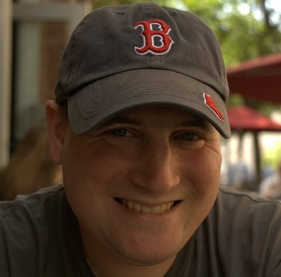

Hi, I'm Matt Rosensweig
Nice to meet you!
I’m a software developer based in Orlando, FL. Please check out my website and feel free to contact me!
Software Developer

I’m a software developer based in Orlando, FL. Please check out my website and feel free to contact me!
I graduated college with a degree in Technical Theatre and I’ve been working in the live entertainment industry ever since, mostly on large circus-themed productions in Las Vegas. In this profession, the main focus is on entertaining the audience. My coworkers and I all contribute to the common goal of making the audience happy. I would love to work with other software developers with the same “customer-first” mentality.
When I’m not working,I enjoy trying all kinds of new foods and drinks, but especially beer, wine, and coffee. I even brew my own beer at home!
If you would like to help me continue my journey as a developer, or even if you just want to chat about beer, please reach out! My contact info is below. Thanks for reading!
Please feel free to follow me or reach out, I would love to hear from you!